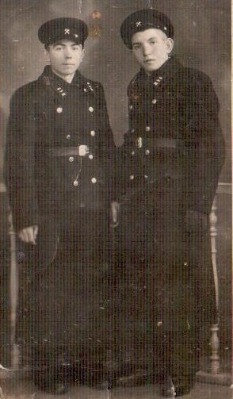
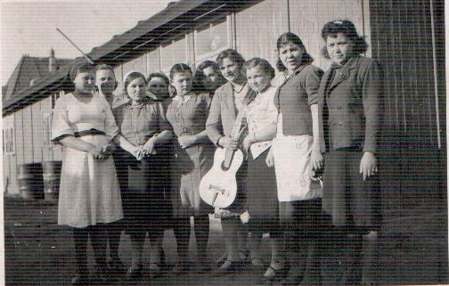
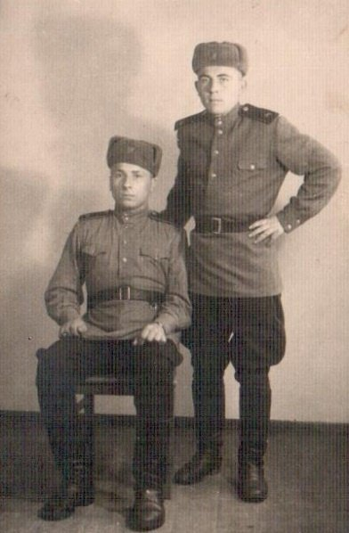

Бугук Фёдор Семёнович
🏡 1. Семья и довоенное детство
В семье росло девятеро детей. Мама — Прасковья Петровна, отец — Семён Максимович, крестьяне. Жили на хуторе. До 1939 г. Фёдор учился в польской школе, в 1940 г. поступил в железнодорожное училище в Лунинце на помощника машиниста.
⚡ 2. Начало войны и оккупация родного края
В июне 1941 г. директор училища отпустил курсантов по домам. Фёдор вернулся на хутор. В 1942 г. начался принудительный угон молодежи. Фёдора арестовали в Лунинце, но отцу удалось вызволить сына. Юноша скрывался в лесу, но 1 мая 1942 г. зашел переночевать домой и был схвачен карателями.
⛓️ 3. Облава, арест и отправка в эшелонах
Через КПЗ в Лунинце и казармы в Бресте в товарных вагонах с колючей проволокой Фёдора отправили в Германию. Попал в лагерь Мариензиль в городе Вильгельмсхафен. Распределили на машиностроительный завод «Maschinenbaubetrieb». Заметив нечеловеческие условия у станков, Фёдор по совету старших рабочих специально запорол деталь, после чего его перевели на разгрузку кокса, брюквы и картофеля.
🌾 4. Рабский труд, испытания и лагеря Германии
Попытался заступиться за избиваемого немецким надзирателем рабочего — угодил в карцер и тюрьму на три недели. Затем направлен на приборостроительный завод в цех «Купершмидт», где выпускали узлы для подводных лодок. За подозрение в краже брюквы из столовой был зверски избит гестаповцами резиновыми дубинками до потери сознания. Сидел в переполненной камере гестапо с полешуками Губичем и парнем по кличке «Готель».
🕊️ 5. Освобождение союзными и советскими войсками
В конце войны узников вывели в поле под пулеметы охраны, но утром охрана сбежала. В лагерь прибыли канадские солдаты на машинах с кленовыми листьями, раздававшие галеты. Вскоре подошли советские части и переправили узников через Эльбу.
🌱 6. Возвращение на пепелище и мирный труд
Фёдор добровольно вступил в ряды Красной Армии: служил в батальоне особого назначения, затем в 350-м гаубичном полку в Эленбурге мастером по вооружению, дослужился до старшины полка. Демобилизовался в 1950 г. Работал машинистом и слесарем на лесозаводе и мельнице в Микашевичах. Женился на Любови, после ее смерти — на ее сестре Вере Леонтьевне. Вырастил четверых детей.
📷 Фотографии и архивные документы (3)
Фото 5. Федор (слева) с другом Андреев 1940 год, Лунинецкое училище

Фото 6. Трудовой лагерь Мариензиль, 1943 год

Фото 7. Федор (стоит) с другом, 1947 год